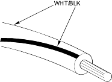

- Verify The Complaint
Turn on all the components in the problem circuit to verify the customer complaint. Note the symptoms. Do not begin disassembly or testing until you have narrowed down the problem area.
- Analyse The Schematic
Look up the schematic for the problem circuit. Determine how the circuit is supposed to work by tracing the current paths from the power feed through the circuit components to ground. If several circuits fail at the same time, the fuse or ground is a likely cause.
Based on the symptoms and your understanding of the circuit operation, identify one or more possible causes of the problem.
- Isolate The Problem By Testing The Circuit
Make circuit tests to check the diagnosis you made in step 2. Keep in mind that a logical, simple procedure is the key to efficient troubleshooting. Test for the most likely cause of failure first. Try to make tests at points that are easily accessible.
- Fix The Problem
Once the specific problem is identified, make the repair. Be sure to use proper tools and safe procedures.
- Make Sure The Circuit Works
Turn on all components in the repaired circuit in all modes to make sure you have fixed the entire problem. If the problem was a blown fuse, be sure to test all of the circuits on the fuse. Make sure no new problems turn up and the original problem does not recur.
The following abbreviations are used to identify wire colours in the circuit schematics:
| WHT…………… | White |
| YEL……………. | Yellow |
| BLK……………. | Black |
| BLU……………. | Blue |
| GRN…………… | Green |
| RED……………. | Red |
| ORN…………… | Orange |
| PNK……………. | Pink |
| BRN……………. | Brown |
| GRY…………… | Grey |
| PUR……………. | Purple |
| LT BLU………… | Light Blue |
| LT GRN……….. | Light Green |
The wire insulation has one colour or one colour with another colour stripe. The second colour is the stripe.
